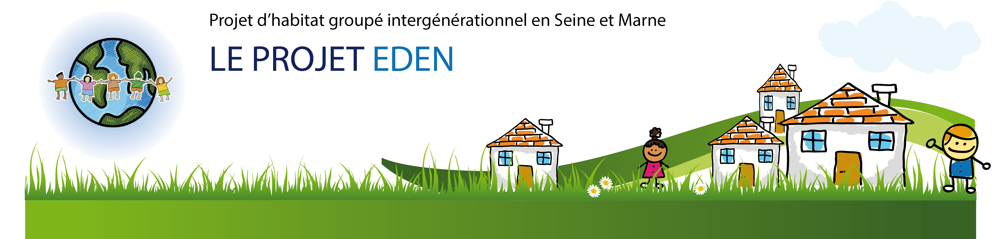

A l'origine du projet, une microcrèche était prévue. La commune d'implantation étant défavorable à l'installation d'une micro-crèche sur son territoire, cette activité a été abandonnée. Cette partie du projet (ou une activité en lien avec les enfants) pourrait être remis à l'ordre du jour selon les besoins et la demande de la nouvelle commune d'implantation. Toute activité économique, culturelle, associative, compatible avec les valeurs du projet EDEN est envisageable. N'hésitez pas à nous contacter si vous souhaitez intégrer le pôle activités économiques du projet EDEN.
Ce lieu est destiné à accueillir les espaces mutualisés et partagés (salle polyvalente, cuisine, ...) Il sera accessible aux habitants du projet EDEN et sera ouvert sur l'extérieur. Un café associatif avec animations culturelles, musicales, artistiques, débats, conférences, ...
 (Copier).JPG)
 (Copier).JPG)
 (Copier).JPG)
 (Copier).JPG) la tête des trains a Tousson
la tête des trains a Tousson
 (Copier).JPG)
 (Copier).JPG)
 (Copier).JPG) Le cric
Le cric